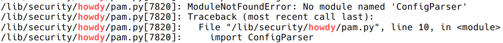
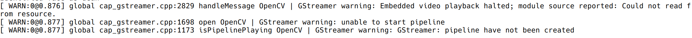

KDE Tricks (3) —— Howdy!
需求
你好！想让电脑跟你打招呼嘛，就像 Windows Hello 那样？来试试 Howdy 吧，它是 Linux 上通过电脑的红外传感器（或摄像头）识别人脸，解锁电脑的程序。
Arch Linux Wiki 上有对它的介绍。Howdy 最新的稳定版是 v2.6.1，发布于 2020 年，因此有很多配置会在如今出现问题，在这篇博客中记录一下。
操作
安装
在 Arch Linux 上可以以 AUR 包的形式安装：
1 | paru -S howdy |
添加红外传感器 / 摄像头
可以在诸如 cheese、fswebcamAUR 或者 v4l-utils 的程序里找到并确定能连接到红外传感器的正确 /dev/videoX 文件，
以内置于 v4l-utils 软件包的工具为例：
1 | v4l2-ctl --list-devices |
在上述例子中，有不止一个网络摄像头，而且每一个摄像头都有好几个不同的 /dev/videoX 路径，一般来说选第一或第二个路径会比较好。
修改配置文件：
1 | sudo vim /lib/security/howdy/config.ini |
1 | # 修改以下内容 |
对于我的笔记本电脑而言（幻 14 2022 / ROG Zyphyrus G14 (2022) ），摄像头路径为 /dev/video0，红外传感器路径为 /dev/video2。
如果设备有红外传感器，建议使用。使用摄像头会导致照片也能解锁设备。
配置红外传感器
由于红外传感器（IR Emitter）会闪烁发射，我们需要配置 /lib/security/howdy/config.ini 当中 dark_threshold 这个参数来忽略部分帧：
1 | # Because of flashing IR emitters, some frames can be completely unlit |
测试与录入人脸
测试 Howdy 的识别情况：
1 | sudo howdy test |
在 Howdy 中添加人脸：
1 | sudo howdy add |
查看添加的人脸模型：
1 | sudo howdy list |
取消拍照
Howdy 会在识别用户时拍照，然后保存到 /lib/security/howdy/snapshots。这某种程度来说是一个安全漏洞。攻击者能够轻易找到某次成功登录的照片并用它来冒充您进行登录，从而达到提权的目的。当然，攻击者还可以使用目标用户的任何其他照片，但是 Howdy 简化了该过程。
1 | sudo vim /lib/security/howdy/config.ini |
1 | [snapshots] |
鉴权配置
为了让 Howdy 能够对用户进行身份验证，您需要在使用了 Howdy 的 PAM 配置文件中做一些小改动。请把以下内容添加到对应的配置文件中：
1 | auth sufficient pam_python3.so /lib/security/howdy/pam.py |
需要 sudo 时启用，则添加到 /etc/pam.d/sudo，需要 SDDM 登录时启用，则添加到 /etc/pam.d/sddm 或 /etc/pam.d/system-login。
为 howdy/pam.py 添加 sufficient 的控制标记后，将只提示进行人脸身份验证。如果您无法中断（Ctrl+C）面部识别过程（比如在解锁屏幕和 Polkit 验证窗口中），那您将无法使用密码进行验证。想要既能人脸识别，又能用密码验证，请把以下内容添加到 /etc/pam.d/ 下对应的 PAM 配置文件的最顶部。
1 | auth sufficient pam_unix.so try_first_pass likeauth nullok |
问题一：No module named ‘ConfigParser’

这个问题是由于 Howdy 没有完全抛弃 Python 2 导致的。
修改 /lib/security/howdy/pam.py，将 ConfigParser 改为 configparser：
1 | # pam-python is running python 2, so we use the old module here |
问题二：终端里有 GStreamer warnings

直接更改 log 输出等级即可。
1 | sudo vim /etc/profile |
在文件中添加 OpenCV log 日志等级环境变量：
1 | export OPENCV_LOG_LEVEL=ERROR |
使用
这样就大功告成了！如果配置了 /etc/pam.d/sudo 文件，可以直接新建一个终端，输入 sudo -i 来测试结果。